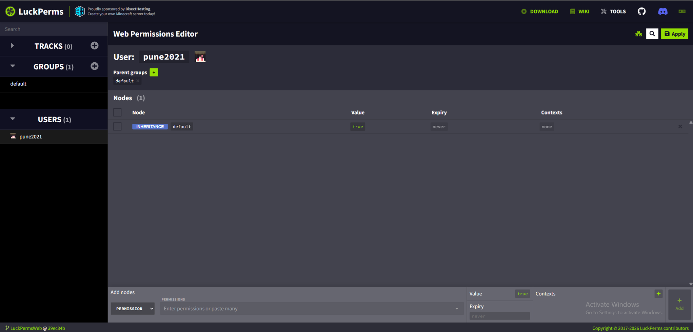
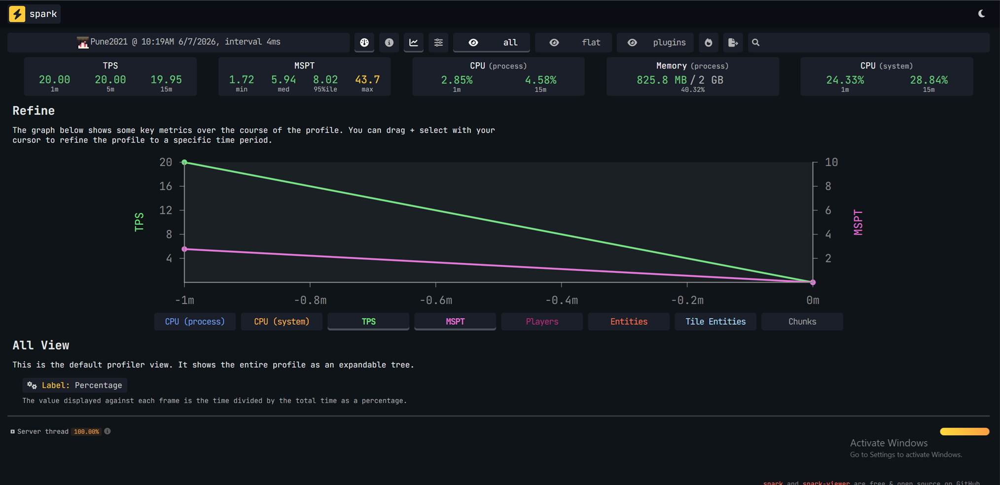
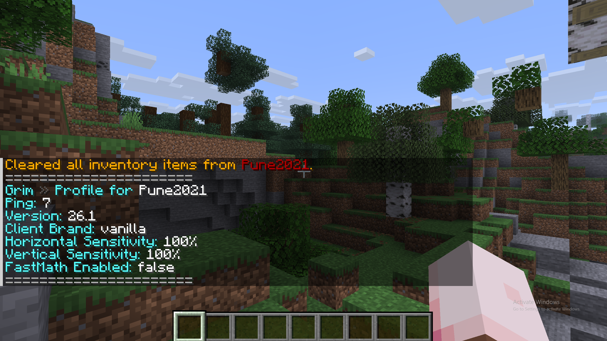
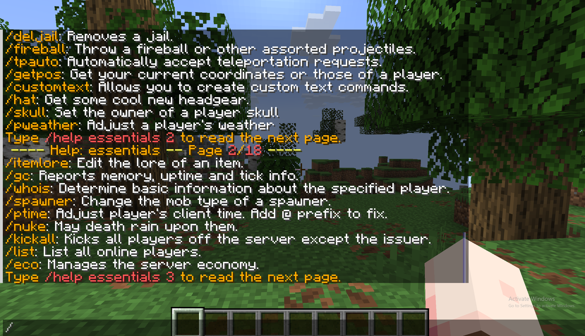
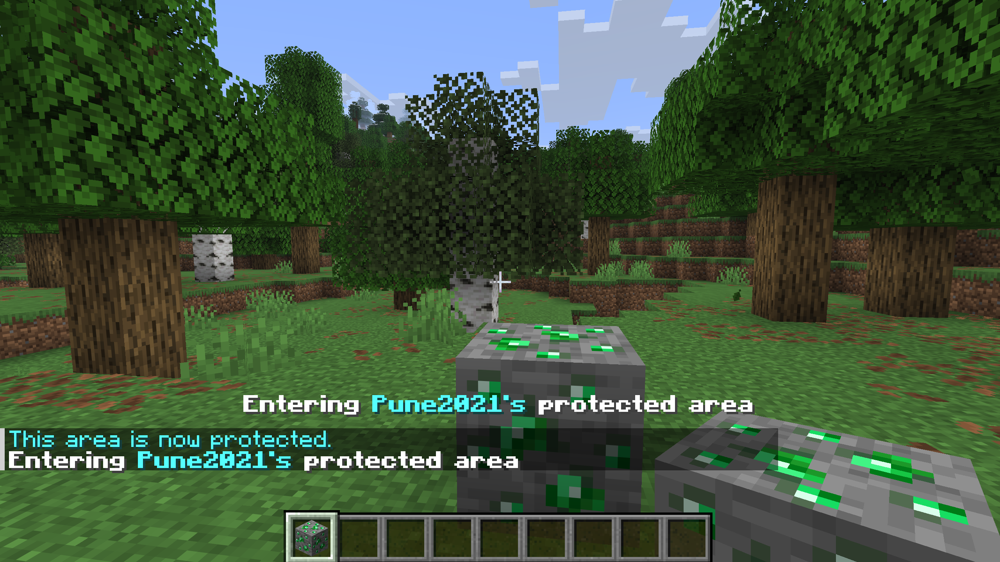

สวัสดีครับชาว Minecraft และผู้เปิดเซิร์ฟเวอร์ทุกคน! ในปี 2026 นี้ การทำเซิร์ฟเวอร์ให้เสถียรและถูกใจผู้เล่นไม่ได้ขึ้นอยู่กับสเปคเครื่องเพียงอย่างเดียว แต่หัวใจสำคัญคือการเลือกใช้ Plugin หลังบ้าน ที่เบา ทันสมัย และแก้ปัญหาได้ตรงจุด บทความนี้แนะนำ 5 ปลั๊กอินสำหรับเจ้าของเซิร์ฟมือใหม่ ที่อยากเริ่มต้นถูกทาง — ช่วยรักษา TPS ให้ใกล้ 20.0 และจัดการเซิร์ฟได้ง่ายขึ้นครับ
สรุป 5 ปลั๊กอินเด็ดในบทความนี้
อ่านประมาณ 10 นาที · เหมาะสำหรับเจ้าของเซิร์ฟมือใหม่ แนว Survival, MMORPG และเซิร์ฟเล่นกับเพื่อน
คำแนะนำเพิ่มเติมก่อนติดตั้ง
แนะนำให้รันปลั๊กอินบน PaperMC หรือ Purpur — เวอร์ชัน Java ต้องตรงกับเวอร์ชัน Paper (เช่น Paper 1.20–1.21.11 ใช้ Java 21, Paper 26.1+ ใช้ Java 25) ดูตารางล่าสุดที่ PaperMC Docs
ก่อนลงปลั๊กอิน ตรวจเวอร์ชันเซิร์ฟ ดาวน์โหลด .jar ปลั๊กอินให้ตรง Minecraft
และรัน java -version ให้ตรงตาราง Paper — ดาวน์โหลด JDK ได้ที่ Java JDK
เลือก Paper Version ให้ตรงกับเซิร์ฟของคุณ แล้วติดตั้ง Recommended Java Version คู่กัน — อัปเดตตาม PaperMC Getting started
| Paper Version | Recommended Java Version |
|---|---|
| 1.7.10 ถึง 1.11 | Java 8 |
| 1.12 ถึง 1.16.4 | Java 11 |
| 1.16.5 | Java 16 |
| 1.17 ถึง 1.19 | Java 17 |
| 1.20 ถึง 1.21.11 | Java 21 |
| 26.1 ขึ้นไป | Java 25 |
การลงปลั๊กอินทีละมากเกินไปมักทำให้เซิร์ฟหนักและดูแลยาก แนวทางที่นิยมคือ Less is More — เลือกปลั๊กอินที่จำเป็นจริงๆ ตรวจสอบว่าไม่ชนกัน และทดสอบ TPS หลังเพิ่มทีละตัว เพื่อให้เซิร์ฟรองรับผู้เล่นได้มากขึ้นโดยไม่ต้องอัปเกรดเครื่องทุกครั้ง
| ชื่อปลั๊กอิน | หน้าที่หลัก | การกินทรัพยากร (RAM/CPU) | ระดับการตั้งค่า |
|---|---|---|---|
| LuckPerms | จัดการยศและสิทธิ์ผู้เล่น | ต่ำ (เมื่อตั้งค่าปกติ) | ง่าย (มี Web Editor) |
| Spark | วิเคราะห์อาการแลคของเซิร์ฟ | ต่ำ (สูงขึ้นตอนสั่ง profiler) | ปานกลาง |
| Grim | ป้องกันโปรแกรมโกง (ฟิสิกส์) | ปานกลาง (ขึ้นกับจำนวนผู้เล่น) | ปานกลาง–ยาก |
| EssentialsX | คำสั่งพื้นฐานและระบบเศรษฐกิจ | ปานกลาง (ยิ่งเปิดโมดูลเยอะยิ่งหนัก) | ง่าย–ปานกลาง |
| ProtectionStones | โพรเทกต์ที่ดินด้วยบล็อกโพรเทกต์ | ต่ำ–ปานกลาง (ขึ้นอยู่กับ WorldGuard) | ง่าย (ตั้งค่ารัศมีและบล็อกใน config) |
LuckPerms เป็นปลั๊กอินยอดนิยมสำหรับกำหนดว่ายศไหนทำอะไรได้บ้าง เช่น ให้ VIP ใช้คำสั่งพิเศษ หรือจำกัดสิทธิ์แอดมิน — รองรับทั้งคำสั่งในเกมและ Web Editor
วิธีติดตั้งเบื้องต้น
.jar ในโฟลเดอร์ plugins/ แล้วรีสตาร์ทเซิร์ฟ/plugins ตรวจว่ามี LuckPerms สีเขียว จากนั้นลอง /lp editor/lp editor เพื่อเปิดลิงก์ตั้งค่าบนเว็บ

เมื่อเซิร์ฟกระตุกหรือ TPS ต่ำ Spark ช่วยเก็บข้อมูลและสรุปเป็นรายงานบนเว็บ ให้เห็นว่า plugin หรือโลกส่วนไหนกินทรัพยากรมาก
วิธีติดตั้งเบื้องต้น
plugins/ แล้วรีสตาร์ท/spark — ถ้าโหลดได้แสดงว่าติดตั้งสำเร็จ# สั่งให้ระบบเริ่มเก็บข้อมูลวิเคราะห์เซิร์ฟเวอร์
/spark profiler start
# ปล่อยให้ระบบเก็บข้อมูลสัก 2-3 นาทีแล้วสั่งหยุดรันเพื่อรับลิงก์รายงานผล
/spark profiler stop
Grim (GrimAC) ใช้การจำลองฟิสิกส์ของเกมเพื่อตรวจพฤติกรรมผิดปกติ ช่วยลดกรณีแบนผู้เล่นบริสุทธิ์เมื่อเทียบกับ anticheat รุ่นเก่าบางตัว — แต่ยังต้องปรับ config ให้เหมาะกับประเภทเซิร์ฟ
วิธีติดตั้งเบื้องต้น
plugins/ แล้วรีสตาร์ท — ดู Console ว่าไม่มี error สีแดง
plugins/Grim/
ตามคู่มือทางการ
EssentialsX รวมคำสั่งที่หลายเซิร์ฟใช้บ่อย (/home, /spawn, ระบบเงิน, kits ฯลฯ) — บางเซิร์ฟต้องลงหลายไฟล์เสริม (เช่น EssentialsXSpawn) ตามฟีเจอร์ที่ต้องการ
วิธีติดตั้งเบื้องต้น
.jar ใน plugins/ แล้วรีสตาร์ท/plugins และ /ess version (หรือคำสั่งที่เอกสารระบุ)/sethome, /home), spawn, ป้ายร้าน, เงิน, kits

ป้องกันพื้นที่ของตัวเองได้ง่ายๆ เพียงแค่หยิบบล็อกที่เซิร์ฟเวอร์กำหนด (เช่น บล็อกเพชร บล็อกทอง) มาวางลงบนพื้น รัศมีโดยรอบก็จะถูกโพรเทกต์ทันที
วิธีติดตั้งเบื้องต้น
.jar ทั้งหมดในโฟลเดอร์ plugins/ แล้วรีสตาร์ทเซิร์ฟเวอร์/ps
เพื่อตรวจสอบว่าระบบทำงานร่วมกับโบลกโพรเทกต์สำเร็จ
# คำสั่งชวนเพื่อนเพิ่มชื่อเข้าแปลงโพรเทกต์ร่วมกัน
/ps add [ชื่อผู้เล่น]
# คำสั่งเทเลพอร์ตวาร์ปกลับมายังจุดบล็อกโพรเทกต์ของตนเอง
/ps home [ชื่อแปลง]

โดยทั่วไปเบาเมื่อตั้งค่าเหมาะสม แต่ผลจริงขึ้นกับจำนวนผู้เล่น โลก และปลั๊กอินอื่นที่ลงร่วมด้วย แนะนำใช้ Spark วัดหลังเพิ่มปลั๊กอินทีละตัวบน PaperMC
ใช้ Spark ตามคำสั่งในหัวข้อที่ 2 — รายงานจะบอกว่า plugin หรือ task ไหนใช้เวลามากผิดปกติ
ส่วนใหญ่รองรับย้อนหลังได้ แต่ต้องเลือกเวอร์ชัน .jar ที่ระบุรองรับเวอร์ชันเกมของคุณ — อย่าใช้ไฟล์ล่าสุดกับเซิร์ฟเก่าโดยไม่เช็ค changelog
ขึ้นกับเวอร์ชัน Paper — ดูตาราง ด้านบน หรือ PaperMC Docs Paper 1.20–1.21.11 ใช้ Java 21, Paper 26.1+ ใช้ Java 25
หลังติดตั้งแล้ว แนะนำทดสอบทีละปลั๊กอินและสำรองโลกก่อนเปิดเซิร์ฟจริง หากต้องการรวมลิงก์ดาวน์โหลดหรือไฟล์เสริม ดูได้ที่คลังทรัพยากรของเว็บ
ลิงก์คลังดาวน์โหลด: คลังทรัพยากรดาวน์โหลดปลั๊กอิน Minecraft ประจำเว็บไซต์ Zencrafterly